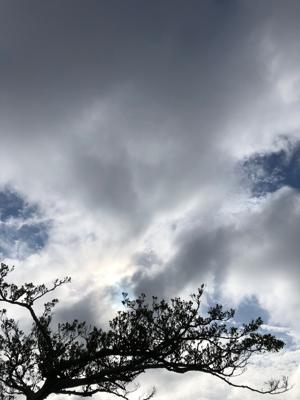

うるがいの話 ある日
最新: 定置網を潜る【うるがいの話 ある日】とは 一日だけのプログです
『うるがいの話』の最新一日だけのプログで、通信料が少なく経済的だ。カニの画像をクリックすると全ての日付が載る『うるがいの話』サイトを表示します
|
|
【うるがいの話】 うるがい(ｳﾙｶﾞｲ urugai)とは、『もずくがに』の名前でとても大きくなります。 |
|---|---|
|
|
【カミマヤーの話】 猫のことを方言でマヤーといいます。カミマヤー（kamimayaa）とは、神の猫のことです。 |
|
【たながぁの音楽】 たながぁ（ﾀﾅｶﾞｰ tanagaa）とは手長えびのことで、何種類かあり大きいのは車 エビぐらいになります。 |

|
【ぶながぁの話】 ぶながぁ(ﾌﾞﾅｶﾞｰ bunagaa)とは、赤い髪の毛、赤い身体、そして身長は１ｍ２０ｃｍ ぐらい、川の蟹を食べているの目撃された。場所は沖縄県国頭郡大宜味村のと ある村僕の隣近所に住んでいる爺さんから、聞いた話です。 |
|
|
【ギーマの話】 ギーマ(giima)とは、山原の里山に咲くスズランに似た、 花を付けます。実は食べられます、 気が付くと口の周りが紫になっています。 |
2022年08月02日 (火）定置網を潜る
15:29


『ザ・ダイビングｉｎ沖縄』著者 小出康太郎 より引用
大宜味の漁師、アランさん
徹夜明け、義兄（姉の旦那）に付き合い、父親が運転する船で奥間ビーチの沖
沖縄本島北部の西海岸に、大宜味という村がある。他県からの観光客で賑わう
オクマビーチが、海を隔てた対岸に見え、人気の高い万座ビーチホテルと並ん
で、ヤングに受けているヴィラ・オクマビーチ・リゾートというホテルも大宜
味村に入る。だから、大宜味の沖合というより、オクマビーチリゾートの沖合
といった方が話は早い。そこでの潜水が、冒頭の「忘れがたいダイビング」の
ひとつになった。
沖縄本島の南部に糸満という、古来漁業で知られた町がある。その町の出身で
、若い時に大宜味が気にいって住みつき、以来ウミンチュウ（漁師）で身を立
て、生活を支えてきた人に、アラン・ドロンさんという方がいる。この時の潜
水は、宿泊も食事も含めアランさんとその家族の方々の協力があって初めて可
能だった。
アランさんは、ウミンチュウにしては品の良すぎる顔立ちをし、初対面の時そ
の方がアランさんだとは気付かなかった。立派で風格のある顔だちだ。ウミン
チュウにしては、といういい方は失礼とは思うが、少くとも私が沖縄赴任以来、
出会ったウミンチュウの顔ではない。知性と教養を感じさせる面立ちなのであ
る。
言葉には強いなまりがあって、当初、意思の疎通にまごついたが、アランさん
の誠意と歓迎心が伝わってくるにつれ、仰言る内容も何とか解るようになった。
私が水中で寝ていた出来事（事前調査）のあとの、父親は著者を案内してダイ
ビングをさせた内容が書かれている。実名を当時、アラン・ドロンに似ている
と言われていたので変更する。ここまで書かれたら、恥ずかしくなると思うが
。この本貰ってから昨日初めて読んだ、何かと忙しかったんだろう。定置網に
サメが映っている、私自身は生きているサメは海で見たことがない。父親は肩
をサメにやらた跡があり、１０センチ程の傷後があった。
１５時２１分 ビットコインの総資産 ￥８、６９４↓